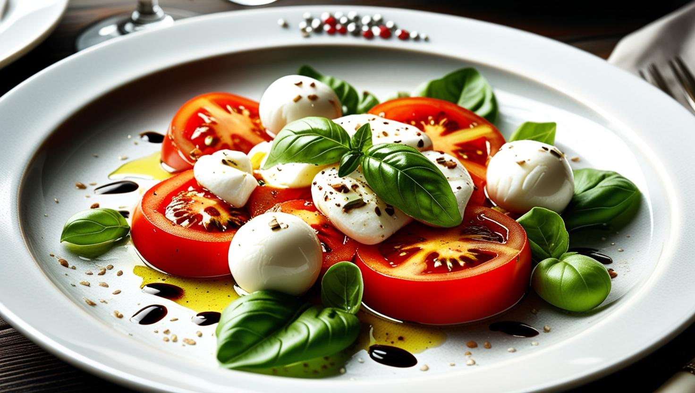

Caprese Salad

Description:
A fresh and vibrant Italian dish, Caprese Salad is a simple yet elegant combination of juicy tomatoes, creamy mozzarella, and fragrant fresh basil. Drizzled with olive oil and balsamic glaze, it’s a refreshing appetizer or side dish perfect for any occasion.
This light salad brings out the natural flavors of its ingredients, offering a delightful harmony of taste, color, and texture.
Ingredients:
- 4 ripe tomatoes, sliced
- 300g fresh mozzarella, sliced
- Fresh basil leaves
- 2 tablespoons olive oil
- 1 tablespoon balsamic glaze
- Salt and freshly ground black pepper to taste
Steps:
- Arrange tomato and mozzarella slices alternately on a serving plate, slightly overlapping.
- Place fresh basil leaves between each slice or on top for garnish.
- Drizzle with olive oil and balsamic glaze.
- Season with salt and freshly ground black pepper to taste.
- Serve immediately as an appetizer or side dish.
Homepage